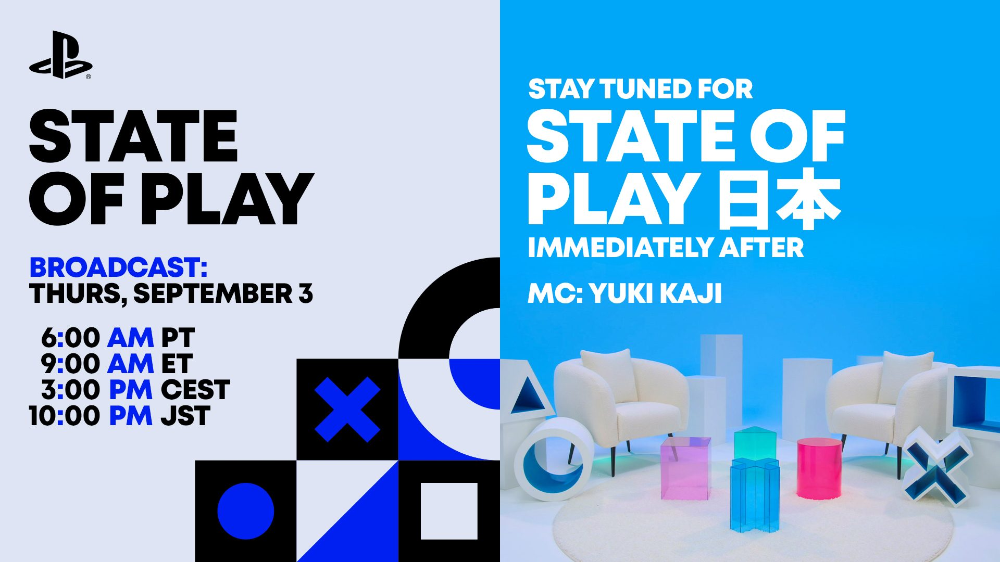
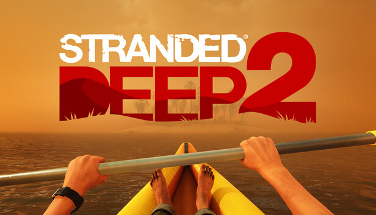
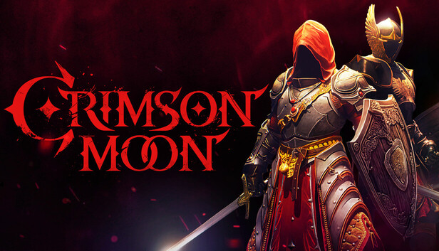

🔥🔥
State of Play + State of Play Japan 定档 9/3
PlayStation Blog 8/31 官宣连续两场；英文场以《最终幻想VII Revelation》深潜收尾。未播，不预写片单。
- 日期
- 2026-08-31 08:05 ET · 补入核
- 库
- 游戏行业观察
- 开播
- 2026-09-03 21:00 CST
今日无新旗舰。今日无新 MCP/Skill 推荐。主线是 PlayStation 官宣 9/3 连续两场 State of Play（以《最终幻想VII Revelation》深潜收尾），以及《英雄萨姆：破碎宇宙》已解锁（褒贬不一）。
不复述已报：OpenAI×Cursor 切断、PS5 Pro 零售、巫师3 SoP、ZZZ 3.2 前瞻、菲林斯侧记全文、伊涅芙近闻全文、Codex 0.151.0、GLM-5.3-Flash。游戏开发空库未出 Tab。gamescom 已闭幕；Best Indie Games Fall Showcase 今日 23:00 CST 开播，未播不预写片单。
跨库最高 Attention 落在 9/3 State of Play 官宣，以及《英雄萨姆：破碎宇宙》解锁与 Xbox Disc to Digital Insiders 已 live。
观察清单：Grok 4.7 未锁；原神 18:00 开门后再核 live；终末地 9/2；State of Play / Konami Press Start 9/3 未播不预写；Best Indie Games Fall Showcase 今日 23:00 CST 未播。
PlayStation Blog 8/31 官宣连续两场；英文场以《最终幻想VII Revelation》深潜收尾。未播，不预写片单。
昨报计划发售；现 Steam / PS5 / Xbox Series 已开卖。199 篇评测、好评 43%。
昨报待核。Pure Xbox 写 Alpha / Alpha Skip-Ahead 圈已能插盘领取数字授权。Xbox Wire 仍停 8/26 预告稿。
HF 官方仓 305B / MIT。API 8/21 已有，窗内增量是权重。实验档，不是新旗舰。
「孤灯夜访」菲林斯 + 「聚星源动」伊涅芙。截稿 09:32 尚未到点，不要写成已开池。
| 观察库 | 独立 Signal | 密度 | 备注 |
|---|---|---|---|
| AI 观察 | 3 | 中 | 无新旗舰；无新 MCP/Skill 推荐；Vision 权重非旗舰 |
| 二次元游戏观察 | 1 | 低 | 下半今日 18:00 开门；截稿未到点 |
| 游戏开发观察 | 0 | 空 | 空库未出 Tab |
| 游戏行业观察 | 7 | 高 | 有独立新增；片单空增量 |
今日无新旗舰。今日无新 MCP/Skill 推荐。窗内是 DeepSeek 视觉实验档权重开源，加上 OpenAI 广告规模与 Anthropic 对齐长文。
不复述 GLM-5.3-Flash、Qwen3.8-Flash-Next、Gemini 3.5 Transcribe、Codex 0.151.0、OpenAI×Cursor。编程轴无稳定新版本条。
DeepSeek 把 V4 家族第一款实验多模态档 DeepSeek-V4-Flash-Vision-Exp 放到 Hugging Face，权重 MIT。这是已有 API（8/21）的权重落地，不是新旗舰。
| 评测项 | V4-Flash-Vision-Exp | V4-Flash-0731 | Opus-4.8 |
|---|---|---|---|
| Terminal Bench 2.1 | 83.9 | 82.7 | 85.0 |
| DeepSWE | 59.3 | 54.4 | 58.0 |
| Agents’ Last Exam | 27.3 | 25.2† | 25.7 |
| ZeroBench Pass@5 | 35.0 | 未核 | 34.0 |
| Chartography | 64.3 | 未核 | 65.0 |
来源：Hugging Face 模型卡。† 0731 在 ApexBench / Agents’ Last Exam 忽略多模态输入。厂商自报，独立评测未核。
关注度 · 🔥。官方新变体权重，明确非旗舰，不进 MCP/Skill 推荐。
OpenAI 8/31 官方称 ChatGPT Ads 上线不到 200 天，年化收入 run rate 达到 10 亿美元，并继续向印度、欧洲、中东和北非开放 Ads Manager 自助购买。
关注度 · 🔥。行业规模，不是新旗舰，也不是 MCP/Skill 推荐。
Anthropic 8/31 发布长文，回应 7/30 与 8/4 评测环境事故，说明封禁外连、实时分类器、暂停高风险 RL 环境，并计划请 METR 做独立审查。
关注度 · 🔥。安全治理，不是旗舰，也不进推荐轴。
本库只有一条运营向日历落地：原神 7.0 下半今日 18:00 开门。截稿尚未到点，不要写成已经开池。
待核：鸣潮 3.1 周边致歉一线帖 ID 仍未核；NPPA 8 月批次仍未出；砂金·戏浪 9/12。
官方第二期祈愿档期是 2026-09-01 18:00–09-22 14:59。「孤灯夜访」诡灯陌影·菲林斯（雷）与「聚星源动」轰隆雷鸣波·伊涅芙（雷）同开。截稿 09:32 CST 尚未到点，本条是日历落地，不是已开池。

关注度 · 🔥。复刻开门日，非新角；截稿未开。
今日有独立游戏观察新增（《呼吸边缘2》EA 初期特别好评）。展会片单无新世界首发 / 无新锁。主线是 9/3 State of Play 官宣，加上《英雄萨姆：破碎宇宙》解锁与 Disc to Digital Insiders 已 live。
不复述 PS5 Pro 零售、巫师3 SoP、TARAE、绝对魔权实体、GTA6 Extended Look。Best Indie Games Fall Showcase 未播不预写片单。浪漫沙加3 巴西分级、Young Suns 1.0 仍待核。
PlayStation Blog 8/31 宣布 9/3 连续两场 State of Play：先英文场（PlayStation Studios + 第三方，以《最终幻想VII Revelation》深潜收尾），紧接梶裕贵主持的 State of Play Japan。

关注度 · 🔥🔥。官宣档期；未播，不进展会片单。
Konami 宣布 9/3 8:00am PT（23:00 CST）办 30 分钟 Press Start，点名《恶魔城：Belmont's Curse》、寂静岭：Townfall、Rev. NOiR，并预告独家实机。未播不写内容。
关注度 · 🔥。厂商秀预告，未播。
昨报待核。Pure Xbox 写 Disc to Digital 已向 Xbox Insider 的 Alpha / Alpha Skip-Ahead 圈开放：插入 Xbox One / Series X 实体盘并启动，即可领取绑定该盘的数字授权。

关注度 · 🔥🔥。二线 + 社区交叉；一线未发 go-live 稿，不把范围写成全体用户。
昨报计划今日三端发售、截稿尚未解锁。现 Steam / PS5 / Xbox Series 已开卖。Steam 199 篇评测、好评 43%，总评为褒贬不一。

关注度 · 🔥🔥。发售已核；口碑开局弱，后续再看。
RedRuins Softworks / HypeTrain Digital 太空生存续作 Steam 抢先体验已解锁。134 篇评测、好评 88%，总评特别好评。日常窗口「初期评价明显为正」达独立门槛。

关注度 · 🔥。高完成度 EA + 初期正评，进独立轴，不升格大作。
North Beach Games Prague 放出续作首支预告与实机截图。场景从海岛改到沙漠长河，计划 Steam 抢先体验，日期未锁。

关注度 · 🔥。预告向，不进独立轴（无评测、非发售）。
ProbablyMonsters 哥特动作 RPG，计划 2026-09-01 登陆 Steam / Epic / PS5 / Xbox Series。Steam 简中名称字段仍是 Crimson Moon，截稿显示约 15 小时后解锁、无评测。

关注度 · 🔥。日历发售日；解锁后再核评测。
窗口（2026-08-31，2026-09-01] Asia/Shanghai，含昨 9:30 后补入核。空库：游戏开发观察未出 Tab。今日无新旗舰；今日无新 MCP/Skill 推荐；今日有独立游戏观察新增；展会片单无新世界首发 / 无新锁。生成于 2026-09-01 09:30 档日常规整理。